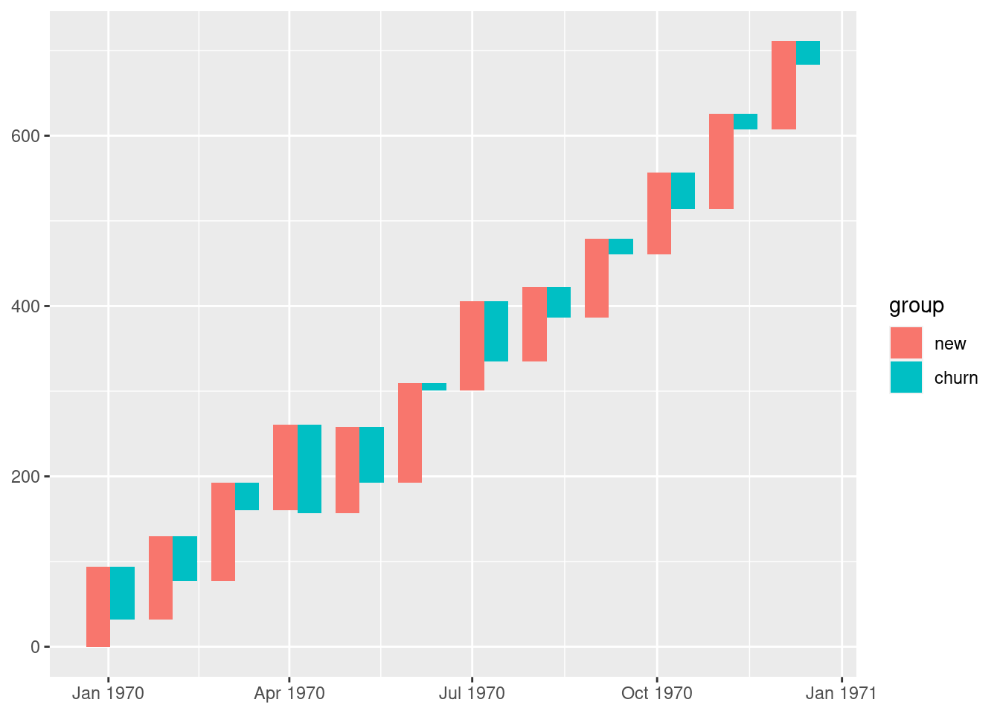
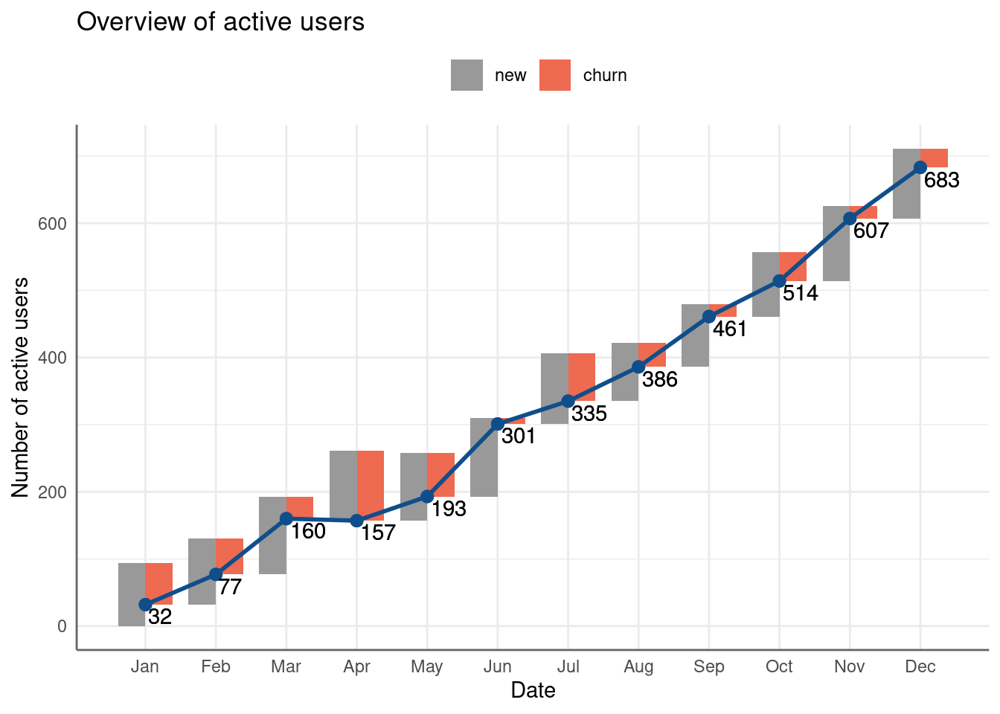
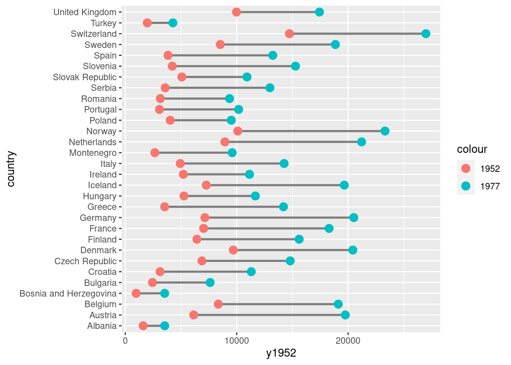
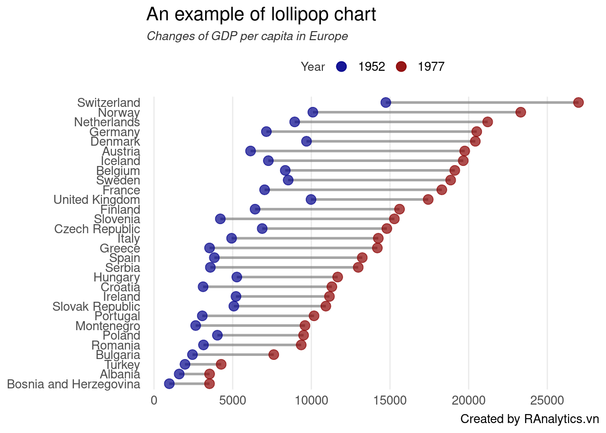

Trong quá trình phân tích bán hàng, phếu bán hàng (sale funnel) là một kỹ thuật rất hữu dụng để trực quan hóa kết quả kinh doanh theo từng nhóm. Tuy nhiên, hiện ít có biểu đồ nào thể hiện được phễu bán hàng một cách hiệu quả trên R.
Trong mục này, tác giả sẽ hướng dẫn một ví dụ thực tiễn trực quan hóa phễu bán hàng một cách hiệu quả.
Trong tập dữ liệu trên, ta sẽ mô phỏng dữ liệu phếu bán hàng của 3 phân khúc khách hàng trên một trang thương mại điện tử mà trong đó, khách hàng sẽ đi qua năm bước khác nhau:
Ghé thăm website (visit)
Đăng ký (register)
Đăng nhập (login)
Đăng ký cập nhật các thông tin sản phẩm (subscribe)
Mua hàng và trả tiền thành công (paid)
Để tạo một biểu đồ phễu bán hàng, ta sẽ thực hiện 3 bước lớn sau.
Tạo theme cho biểu đồ
Tạo các biểu đồ con cho phễu bán hàng
Kết hợp các biểu đồ để tạo thành phễu bán hàng hoàn chỉnh
Cuối cùng, ta có thể tạo ghép các biểu đồ rời rạc để tạo thành phễu bán hàng hoàn chỉnh. Việc kết hợp các biểu đồ trên ggplot2 có thể hoàn thành một cách đơn giản với ggplot2
Như vậy, chúng ta đã hoàn thành phễu bán hàng rất chuyên nghiệp với ggplot2. Phễu bán hàng này đặc biệt hiệu quả khi cùng lúc phải so sánh nhiều phân khúc khách hàng khác nhau trên toàn bộ chuỗi bán hàng.
71.2 Vẽ biểu đồ warterfall cho acive/inactive users
Trong kỷ nguyên số, chỉ số active user (tạm dịch: người dùng thường xuyên hoạt động) là chỉ số đặc biệt quan trọng với bất kỳ website/ app nào. Công thức tính chỉ số người dùng thường xuyên hoạt động tại khoảng thời gian t được tính như sau:
Ví dụ về waterfall chart được lấy từ ví dụ của Tableau tại đường link: [https://public.tableau.com/views/CH24_BBOD_ChurnTurnover/SubscriberChurnAnalysis]
Trong case study này, chúng ta sẽ tìm cách xây dựng một biểu đồ waterfall chart tương tự
# Load librarylibrary(tidyverse)library(ggplot2)library(reshape2)library(lubridate)library(grid)library(gridExtra)# Tạo dữ liệu giả lậpset.seed(123)data <-data.frame(date =seq(1, 372, by =31) %>% as_date)data <- data %>%mutate(new =abs(rnorm(12, 100, 10)) %>%round(0)) %>%mutate(churn =abs(rnorm(12, 50, 30)) %>%round(0)) %>%mutate(net = new - churn) %>%mutate(eop =cumsum(net)) %>%select(-net)data
Trong ví dụ này, dữ liệu được tạo ngẫu nhiên sao cho số lượng active user cuối kỳ (eop - end of period) bằng với số cuối kỳ trước, thêm số lượng mới và trừ đi lượng khách hàng rời bỏ (churn).
Để tạo waterfall chart, ta có thể sử dụng geom_segment trong ggplot2
# Xác định độ rộng của segmentstep <-0.4*(max(data$date) -min(data$date))/(nrow(data) -1)# Xác định ymaxdata <- data %>%mutate(ymax = eop + churn)# Xác định ymindf <- data %>%melt(id.vars =c("date", "eop", "ymax")) %>%mutate(ymin = ymax - value) %>%rename(group = variable)# Xác định xmin và xmaxdf <- df %>%mutate(xmin =case_when( group =="new"~ date - step,TRUE~ date )) %>%mutate(xmax =case_when( group =="new"~ date,TRUE~ date + step ))# Create waterfall chartp1 <- df %>%arrange(date) %>%ggplot() +geom_rect(aes(xmin = xmin,xmax = xmax,ymin = ymin,ymax = ymax,fill = group))p1

Như vậy, ta đã tạo xong biểu đồ water-fall đơn giản. Ở bước tiếp theo, chúng ta cần điều chỉnh lại các thành phần cho biểu đồ.
# Tạo dữ liệu cho biểu đồ đườngdf2 <- df %>%select(date, eop) %>%distinct()# Điều chỉnh themep2 <- p1 +geom_line(aes(date, eop), col ="dodgerblue4", size =1) +geom_point(aes(date, eop), col ="dodgerblue4", size =2.5) +geom_text(aes(date, eop, label = eop), vjust =1.2, hjust =-0.1) +scale_fill_manual(values =c("grey60", "coral2")) +theme_minimal() +theme(axis.line =element_line(color ="gray40", size =0.5),legend.position ="top") +scale_x_date(breaks = data$date,date_labels ="%b") +theme(panel.grid.minor.x =element_blank(),legend.title =element_blank()) +ggtitle("Overview of active users") +xlab("Date") +ylab("Number of active users")p2

Bước tiếp theo, ta cần xây dựng biểu đồ bar đơn giản để có thể đưa vào góc phần tư bên trái của biểu đồ vừa tạo.
Cuối cùng, ta có thể nhóm hai biểu đồ trên với grid & gridExtra.
grid.newpage()# Xác định vị trí cho biểu đồ chínhposition_1 <-viewport(width =1, height =1, x =0.5, y =0.5) # Vị trí cho biểu đồ phụposition_2 <-viewport(width =0.35, height =0.25, x =0.25, y =0.75) print(p2, vp = position_1)print(p3, vp = position_2)
71.3 Xây dựng biểu đồ lollipop chart
Trong trực quan hóa dữ liệu, lollipop chart tuy không phải là một trong những biểu đồ phổ biến nhưng lại rất hiệu quả khi muốn thể hiện sự dịch thay đổi của một chỉ số giữa hai điểm thời gian. Trong case study này, ta xây dựng biểu đồ lollipop chart với ggplot2.
Để xây dựng biểu đồ, ta sử dụng dữ liệu gapminder từ tập dữ liệu gapminder. Mục tiêu là xây dựng biểu đồ thể hiện được sự thay đổi GDP/đầu người của các nước châu Âu trong năm 1952 so với năm 1977.
# A tibble: 10 × 3
country y1952 y1977
<fct> <dbl> <dbl>
1 Albania 1601. 3533.
2 Austria 6137. 19749.
3 Belgium 8343. 19118.
4 Bosnia and Herzegovina 974. 3528.
5 Bulgaria 2444. 7612.
6 Croatia 3119. 11305.
7 Czech Republic 6876. 14800.
8 Denmark 9692. 20423.
9 Finland 6425. 15605.
10 France 7030. 18293.
Biểu đồ lollipop có thể xây dựng dựa trên geom_point và geom_segment như sau.
Biểu đồ đầu tiên
data %>%ggplot(aes(x = country)) +# Tạo đường nối giữa hai điểmgeom_segment(aes(y = y1952, yend = y1977,x = country, xend = country), size =1,col ="grey50") +# Tạo điểm đầugeom_point(aes(country, y1952, color ="1952"), size =3.5) +# Tạo điểm cuốigeom_point(aes(country, y1977, color ="1977"), size =3.5) +coord_flip()

Tuy nhiên, với biểu đồ trên, ta thấy xuất hiện hai lỗi cơ bản sau:
Thứ nhất, thứ tự các các quan sát đang để dạng mặc định. Do đó, kết quả trực quan hóa chỉ mang tính thông tin mà chưa có yêu tố kể chuyện (story telling). Ta có thể giải quyết bằng cách sắp xếp lại factor theo thứ tự từ thấp đến cao.
Thứ hai, biểu đồ thể hiện theo chiều ngang. Do đó, các thông tin không cần thiết có thể được loại bỏ để biểu đồ gọn gàng và mạch lạc hơn.
Ta có thể chỉnh lại biểu đồ như sau.
# Tinh chỉnh theme cho biểu đồmy_theme <-function(...) {theme_bw() +theme(plot.background =element_rect(fill ="white")) +theme(panel.grid.minor =element_blank()) +theme(panel.grid.major.y =element_blank()) +theme(panel.grid.major.x =element_line()) +theme(axis.ticks =element_blank()) +theme(panel.border =element_blank()) +theme(text =element_text(size =13, color ="black")) +theme(plot.subtitle =element_text(color ="gray20", size =10, face ="italic")) +theme(legend.title =element_text(size =10, color ="gray20")) +theme(legend.position ="top")} # Tạo biểu đồ mớip1 <- data %>%mutate(country =fct_reorder(country, y1977)) %>%ggplot(aes(x = country)) +geom_segment(aes(y = y1952, yend = y1977,x = country, xend = country), size =1,col ="grey50",alpha =0.7) +geom_point(aes(country, y1952, color ="1952"), size =3.5, alpha =0.7) +geom_point(aes(country, y1977, color ="1977"), size =3.5, alpha =0.7) +coord_flip() +my_theme() +scale_y_continuous(breaks =seq(0, 30000, by =5000), limits =c(800, 27000)) +scale_color_manual(name ="Year",labels =c("1952", "1977"),values =c("darkblue", "darkred") ) +labs(x =NULL, y =NULL,title ="An example of lollipop chart",subtitle ="Changes of GDP per capita in Europe",caption ="Created by RAnalytics.vn")p1

Bonus: Để nhấn mạnh hơn sự thay đổi của GDP per capita, ta có thể vẽ thêm các đường nối các điểm trong biểu đồ như sau.
p2 <- p1 +geom_line(aes(as.numeric(country), y1977), col ="darkred")p2